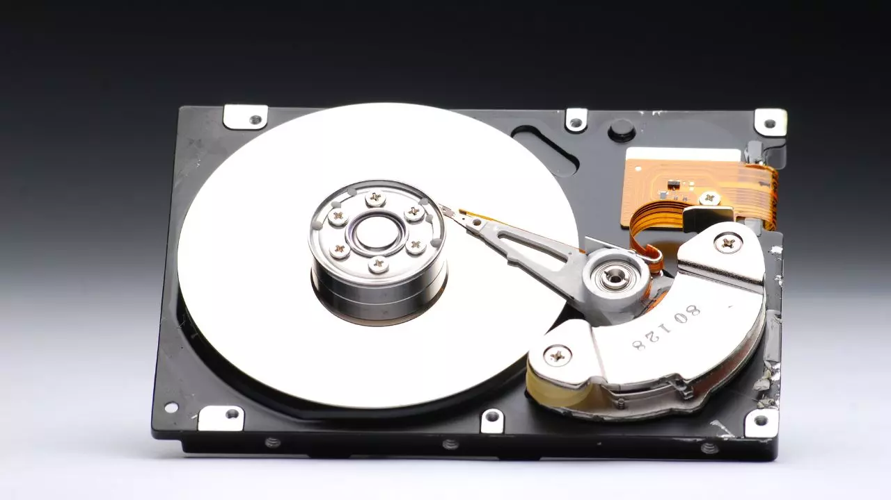
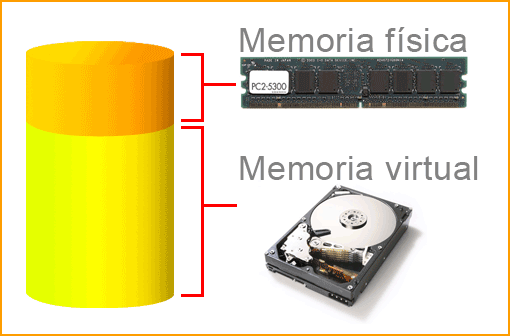

Memoria Flash:
Es una forma de memoria no volátil que se usa principalmente en dispositivos como
discos duros sólidos (SSD), tarjetas de memoria y unidades USB. Los datos no se pierden cuando el dispositivo se apaga. Más rápida que los discos duros tradicionales (HDD). Menor duración en términos de ciclos de escritura, pero aún así tiene una vida útil
larga. Almacena datos de forma permanente o semipermanente. Es utilizada en dispositivos de almacenamiento de estado sólido como SSD.
Discos duros (HDD):
Un dispositivo de almacenamiento no volátil tradicional, que utiliza discos
magnéticos giratorios para leer y escribir datos.
Está compuesta de una placa que contiene compartimentos para retener los datos. Estos datos son su sistema operativo, aplicaciones y cualquier otro archivo que ha creado. También hay un brazo actuador que se mueve por el disco para leer o escribir la información solicitada.

Memoria Virtual:
Un mecanismo que permite a la computadora usar parte del disco duro como si
fuera RAM adicional, cuando la RAM física se agota.
Es una técnica que las computadoras usan para mover temporalmente datos desde la RAM (random-access memori) al disco duro cuando la cantidad disponible de RAM es limitada

Memoria de acceso directo a memoria (DMA):
Un sistema que permite a ciertos dispositivos periféricos (como una tarjeta gráfica o
una tarjeta de sonido) acceder directamente a la memoria principal, sin intervención de la
CPU.